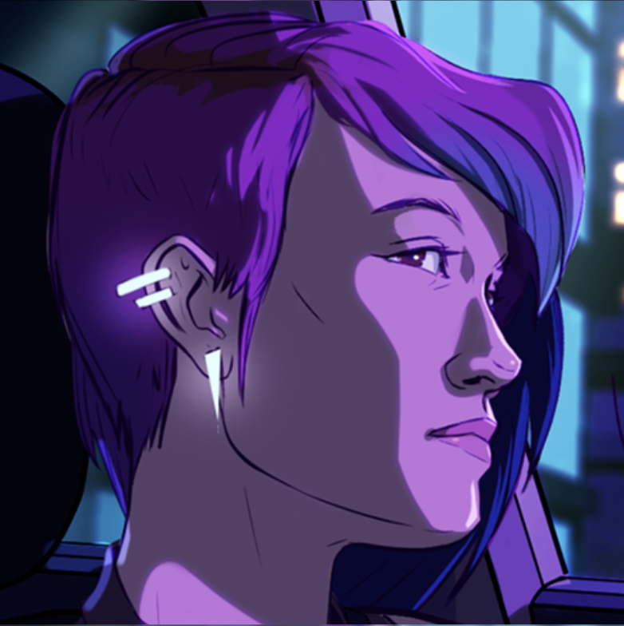

About Blogium
Learn about the web developer, the focus of the project, and credits to sources on design, images and icons.

Sep 9·13 min read
Web Developer: Ali Marie Baker
Ali Marie Baker is a web developer currently living in San Francisco, CA. She most recently worked as a support engineer at Optimizely. In May 2020, she completed her Bachelor of Science in Business Data Analytics and is now pursuing a career in software engineering.
What Is Blogium For?
Blogium is an HTML and CSS only web development project with a specific focus on using CSS Grid Layout.
Important note: All external links will open in a new tab.
Design Credit: Medium
Blogium is a direct replication of the visual design elements found on the 'Popular on Medium' webpage. The name is also a direct reference. That said, all the code is my own.
Image Source Credit
Avatars
- Photo of Miranda Richardson as Rita Skeeter found on Harry Potter Fandom Wiki Page
- Photo of Woman Wearing Eyeglasses by Aidil Bahaman from Pexels
- Photo of Adult Tan and White Pembroke Welsh Corgi Sits on Floor by Stephanie Ho from Pexels
- Woman With Face Paint by Bestbe Models from Pexels
- Silver Tabby Cat by Min An from Pexels
- Man Wearing Red Turban by Nishant Aneja from Pexels
- Woman With Dreaded Hair Wearing Green Hijab by Shanice McKenzie from Pexels
- Woman in White Stripe Crew Neck Shirt Wearing Yellow Cap by uncoveredlens from Pexels
- Man Wearing Black Shirt by YURI MANEI from Pexels
- Man Wearing Blue Hooded Coat by Jan Kopřiva from Pexels
All Other Images
- Burning Candles on Street at Night by Maruf Bijoy from Pexels
- Macro Photography of a Leaf by Karolina Grabowska from Pexels
- Dog Swimming at the Beach by Mark McCammon from Pexels
- Assorted Color Paint Buckets by David Waschbüsch from Pexels
- Red Castle Tower by Silvia Corradin from Pexels
- Red and Black Abstract Painting by cottonbro from Pexels
- Black and White Photo of Clocks by Andrey Grushnikov from Pexels
- Hand on the Bricks by Kaboompics from Pexels
- Blue and Black Hair Brush on Brown Wooden Table by cottonbro from Pexels
- Person Standing in Front of a Train by Josh Hild from Pexels
- Illuminated Neon Sign by Nadi Lindsay from Pexels
Iconography Credit
The 'bookmark' icon located on the index page can be found at:
- Icons made by Those Icons from www.flaticon.com